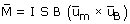

| Par (Torque) sobre una espira
Una espira recorrida por una corriente y colocado dentro de un campo
magnético uniforme sufre un par (Torque) de momento:

| I·S |
Módulo del momento magnético de la espira |
B |
Módulo del campo magnético |
| um |
Vector unitario correspondiente al momento magnético
Es perpendicular a la espira y su sentido viene dado por la regla
del sacacorchos aplicada a la corriente que cir-cula por la espira |
| uB |
Vector unitario correspondiente al campo |
El par hace girar la espira para colocarla perpendicularmente al campo
de forma que el flujo a su través sea máximo
|